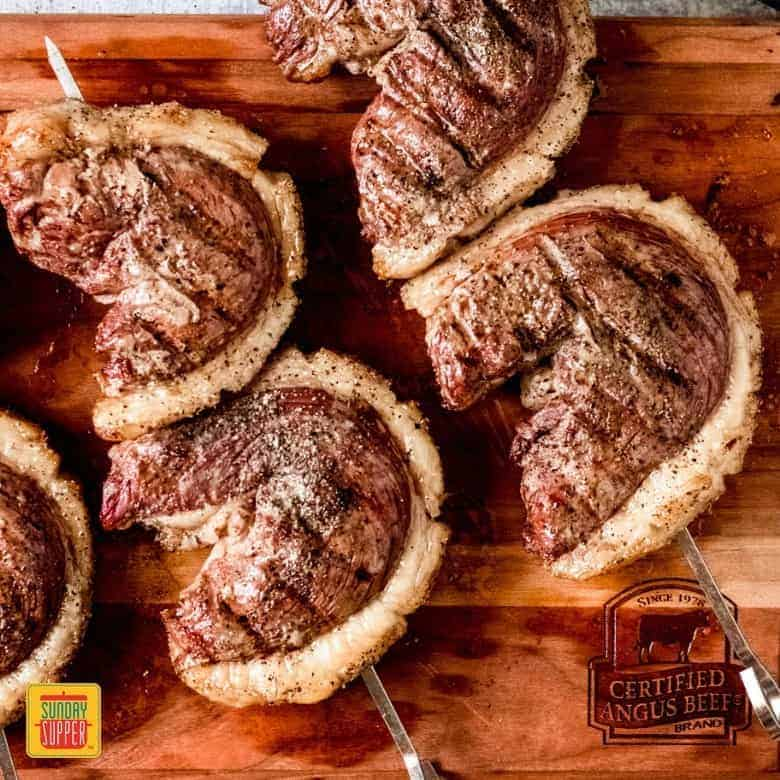

Picanha

Description
Picanha pronounced pi-kan-yah is a tender and juicy cut of beef from the
rump section of the cow. It has a thick layer of fat called the fat cap that lends the
beef its incredible flavor.
If you've ever been to a Portuguese or Brazilian steakhouse, you've had churrasco
picanha!It is the delicious steak served tableside on skewers and sliced on your
plate. It is absolutely amazing and so hard to resist every time they come around
with it.
Like sirloin, picanha steak is very flavorful, buttery, and tender. It is a specialty
of Brazilian churrascaria (steakhouses) and is one of the most delectable
churrasco steak recipes.
Ingredients
- 3-4 pound Picanha cut sirloin cap
- 1 tablespoon Santa Maria seasoning rub
Instructions
- Preheat grill to high (around 400 degrees F). While the grill is heating, prepare
the Picanha. Using a knife, score the fat cap of the Picanha in a crosshatched
pattern making sure to not cut too deep past the fate into the meat.
- Next, season the fat cap with the Santa Maria seasoning rub, reserving about 1
tablespoon.
- Cut the picanha into 1-inch strips. Then, fold each strip into the shape of the
letter "C" and slide onto metal skewers.
- You'll want to grill the sirloin steaks over indirect heat so if needed, turn one
side of the burners off the grill, or rearrange the hot coals to one side so you
can grill over indirect heat. Place the skewers onto the grill and grill for
15-20 minutes, turning every 5 minutes, until the steaks reach the desired level of
doneness.
- Remove the grill and let rest for 5 minutes. Serve, and enjoy!